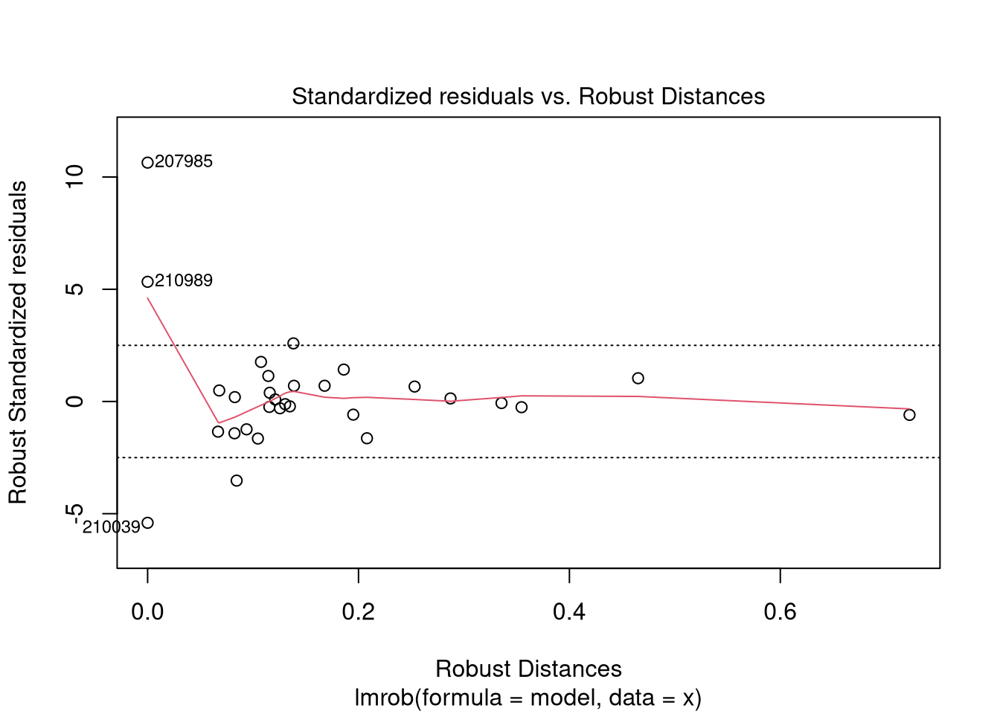
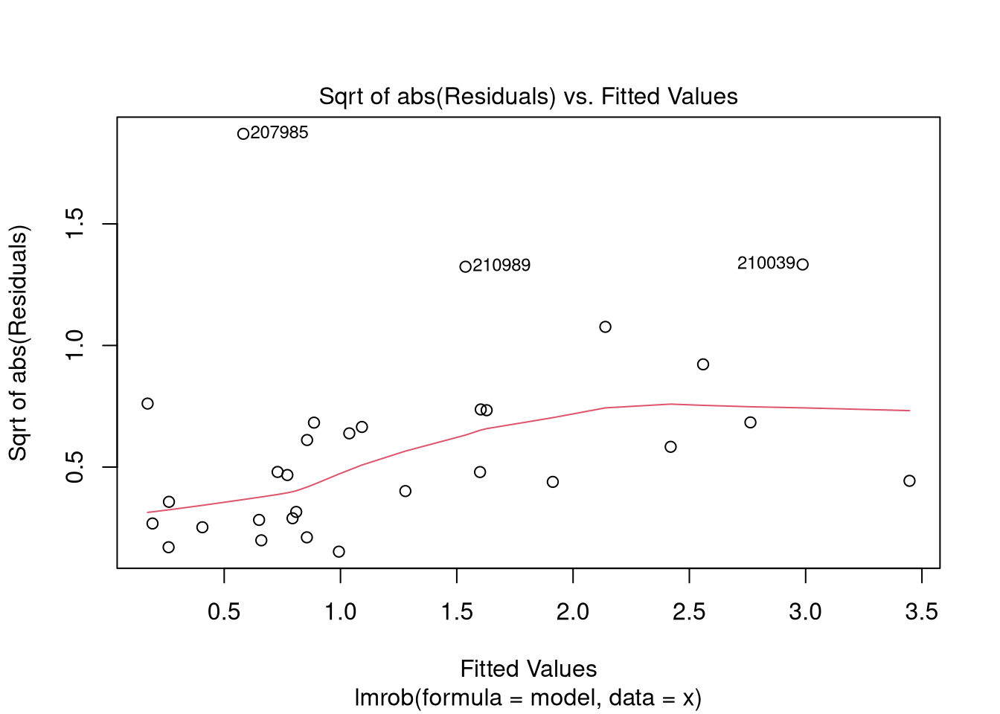
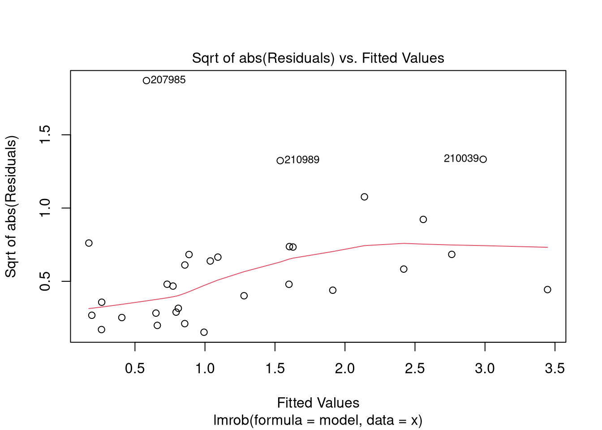

Regional Regression
Worked example 8.1
Introduction
This vignette demonstrates the application of regional regression analysis to model low flows in a spatial context. We use the regional dataset of 30 catchments situated in the forelands and pre-Alps in the north-east of Austria (Section 4.5.2). The dataset is fully described in Laaha & Blöschl (2006a, 2006b). The target variable is the long-term low flow characteristic \(q_{95}\), i.e. \(Q_{95}\) standardized by catchment area to eliminate its predominant effect on low flows. For nested catchments, the \(q_{95}\) was disaggregated into the residual \(q_{95}\) of sub-catchments to decrease statistical dependency of observations. The method assumes synchronicity of low flow events of neighboring gauges at the same river. For more details on this particular river network approach see Section 8.7.2.
In this section we learn how to
- fit a multiple linear regression model,
- perform stepwise regression to perform variable selection and deal with collinearity,
- employ the Cook’s distance method to deal with outliers,
- use the MM-type robust regression method, and
- create specific plots to analyse the quality of the regression model and the specific contribution of each predictor to the regression estimate.
Data import
The text file named Austria_30.txt contains several catchment characteristics for the 30 catchments of the regional data set. Each observation (each line) in the text file corresponds to a single gauging station located at the catchment outlet. The variables (our catchment descriptors) are represented as columns of this data set.
Let us import this tabular data set into an object x0. As the very first line of the text file contains the column headers, we have to specify the header argument accordingly. The function read.table() will return a data.frame.
x0 <- read.table("../../data/Austria_30.txt", header = TRUE)
To get a glimpse of the imported data set, let us print the first three lines of the object x0. They contain the catchment descriptors of the first three catchments.
head(x0, n = 3)
## DBMSNR HZBNR X_LB Y_LB q95s q95w q95 A H0 Hx Hr Hm Sm Ssl Smo Sst P Ps
## 1 1001003 210039 632579 399019 1.11 1.76 1.21 117.5 336 850 514 588.5 8.3 60.5 39.5 0 737.1 487.4
## 2 1001005 210054 641191 397501 1.09 1.55 1.23 107.6 237 705 468 360.4 4.8 91.5 8.6 0 669.0 440.5
## 3 1001006 210062 639309 404781 0.92 1.25 0.98 149.6 256 781 525 470.1 7.4 64.6 35.4 0 701.2 456.8
## Pw Gb Gq Gt Gf Gl Gc Ggs Ggd Gso Lu La Lc Lg Lf Lr Lwa D
## 1 249.6 0 5.8 20.4 0 0 65.9 0 7.9 0 0.5 43.9 0 8.4 47.2 0 0 881
## 2 228.4 0 7.8 58.5 0 0 14.9 0 18.9 0 3.4 38.2 0 2.4 56.1 0 0 720
## 3 244.3 0 10.7 33.6 0 0 47.2 0 8.5 0 4.3 38.3 0 9.3 48.1 0 0 839
To make sure all variables are imported either as class integer or numeric (and not accidentally as class character or factor) let us have a look at the structure of the object x0. Calling the function str() will print the dimensions of the data.frame in the very first line. The following lines contain the name of each variable, its class, and the first few values.
str(x0)
## 'data.frame': 30 obs. of 36 variables:
## $ DBMSNR: int 1001003 1001005 1001006 1001008 1001019 1001021 1001022 1001023 1001026 1001027 ...
## $ HZBNR : int 210039 210054 210062 210088 210211 210237 210245 210252 210286 210294 ...
## $ X_LB : int 632579 641191 639309 637884 613036 631684 623122 630727 627048 634613 ...
## $ Y_LB : int 399019 397501 404781 437789 350694 371673 383547 374437 355737 352828 ...
## $ q95s : num 1.11 1.09 0.92 0.67 2.33 1.26 1.63 0.72 0.57 0.46 ...
## $ q95w : num 1.76 1.55 1.25 0.91 2.88 2 2.19 1.21 0.91 0.71 ...
## $ q95 : num 1.21 1.23 0.98 0.71 2.76 1.44 1.83 1.06 0.65 0.63 ...
## $ A : num 118 108 150 223 139 ...
## $ H0 : int 336 237 256 175 237 241 328 264 220 201 ...
## $ Hx : int 850 705 781 720 452 776 834 827 446 334 ...
## $ Hr : int 514 468 525 545 215 535 506 563 226 133 ...
## $ Hm : num 588 360 470 321 310 ...
## $ Sm : num 8.3 4.8 7.4 5.9 3.9 5 10.4 5.6 4.6 3.8 ...
## $ Ssl : num 60.5 91.5 64.6 75.9 92.3 86.4 40.4 80.9 92.6 94.1 ...
## $ Smo : num 39.5 8.6 35.4 24.1 7.7 13.6 59.6 19.1 7.4 5.9 ...
## $ Sst : num 0 0 0 0 0 0 0 0 0 0 ...
## $ P : num 737 669 701 630 683 ...
## $ Ps : num 487 440 457 403 458 ...
## $ Pw : num 250 228 244 227 225 ...
## $ Gb : num 0 0 0 0 0 0 0 0 0 0 ...
## $ Gq : num 5.8 7.8 10.7 20.5 5.7 7.2 14.2 0.1 10.7 5.6 ...
## $ Gt : num 20.4 58.5 33.6 63.1 46.3 55.2 15.4 42 71.2 75.8 ...
## $ Gf : num 0 0 0 0 0 1.8 31.5 16.4 0 0.1 ...
## $ Gl : num 0 0 0 1.2 0 2.9 17.3 15.5 0.1 0 ...
## $ Gc : num 65.9 14.9 47.2 13.4 0 8 21.3 0 1.3 0.4 ...
## $ Ggs : num 0 0 0 1.5 48 14.4 0.3 26 16.8 18.2 ...
## $ Ggd : num 7.9 18.9 8.5 0.2 0 10.6 0 0 0 0 ...
## $ Gso : int 0 0 0 0 0 0 0 0 0 0 ...
## $ Lu : num 0.5 3.4 4.3 7.8 0 0.7 0.3 0.5 0.2 0.4 ...
## $ La : num 43.9 38.2 38.3 56.4 58.8 54 34.7 54.9 52.2 35.4 ...
## $ Lc : num 0 0 0 1.8 0 0 0 0 0 0 ...
## $ Lg : num 8.4 2.4 9.3 2.6 0.4 5.9 1.7 0 0.5 0 ...
## $ Lf : num 47.2 56.1 48.1 31.2 40.8 39.4 63.3 44.6 46.9 64.1 ...
## $ Lr : num 0 0 0 0.2 0 0 0 0 0 0 ...
## $ Lwa : num 0 0 0 0 0 0 0 0 0.3 0.1 ...
## $ D : int 881 720 839 627 915 858 952 900 753 815 ...
Another way to find out the dimensions of an object is to call dim(x0), ncol(x0) or nrow(x0) explicitly.
The raw data set x0 contains some variables which we do not want to use in our regression model, e.g. the id number or the coordinates of the gauging station. We will remove the columns to simplify the subsequent analysis. It is also a good idea to assign meaningful row names to the data.frame (e.g. the station’s id 'HZBNR' or its location name ) to be able to identify the observations later on.
rownames(x0) <- x0$HZBNR
remove <- c("DBMSNR", "HZBNR", "X_LB", "Y_LB", "q95s", "q95w", "A")
keep <- setdiff(colnames(x0), remove)
x <- x0[, keep]
head(x)
## q95 H0 Hx Hr Hm Sm Ssl Smo Sst P Ps Pw Gb Gq Gt Gf Gl Gc
## 210039 1.21 336 850 514 588.500 8.3 60.5 39.5 0 737.100 487.400 249.600 0 5.8 20.4 0.0 0.0 65.9
## 210054 1.23 237 705 468 360.400 4.8 91.5 8.6 0 669.000 440.500 228.400 0 7.8 58.5 0.0 0.0 14.9
## 210062 0.98 256 781 525 470.100 7.4 64.6 35.4 0 701.200 456.800 244.300 0 10.7 33.6 0.0 0.0 47.2
## 210088 0.71 175 720 545 321.219 5.9 75.9 24.1 0 630.441 403.484 226.722 0 20.5 63.1 0.0 1.2 13.4
## 210211 2.76 237 452 215 310.100 3.9 92.3 7.7 0 683.000 457.900 225.200 0 5.7 46.3 0.0 0.0 0.0
## 210237 1.44 241 776 535 378.307 5.0 86.4 13.6 0 680.122 459.959 220.211 0 7.2 55.2 1.8 2.9 8.0
## Ggs Ggd Gso Lu La Lc Lg Lf Lr Lwa D
## 210039 0.0 7.9 0 0.5 43.9 0.0 8.4 47.2 0.0 0 881
## 210054 0.0 18.9 0 3.4 38.2 0.0 2.4 56.1 0.0 0 720
## 210062 0.0 8.5 0 4.3 38.3 0.0 9.3 48.1 0.0 0 839
## 210088 1.5 0.2 0 7.8 56.4 1.8 2.6 31.2 0.2 0 627
## 210211 48.0 0.0 0 0.0 58.8 0.0 0.4 40.8 0.0 0 915
## 210237 14.4 10.6 0 0.7 54.0 0.0 5.9 39.4 0.0 0 858
Simple linear regression
As a starting point of the analysis, we fit a simple linear regression model. We take the mean annual precipitation \(P\) as the predictor, since it is likely an important control of low flows in the study area.
lm.simple <- lm(q95 ~ P, data = x)
summary(lm.simple)
##
## Call:
## lm(formula = q95 ~ P, data = x)
##
## Residuals:
## Min 1Q Median 3Q Max
## -1.5445 -0.5422 -0.2251 0.0541 3.0542
##
## Coefficients:
## Estimate Std. Error t value Pr(>|t|)
## (Intercept) -2.063146 1.130868 -1.824 0.07878 .
## P 0.005289 0.001727 3.062 0.00482 **
## ---
## Signif. codes: 0 '***' 0.001 '**' 0.01 '*' 0.05 '.' 0.1 ' ' 1
##
## Residual standard error: 0.96 on 28 degrees of freedom
## Multiple R-squared: 0.2508, Adjusted R-squared: 0.2241
## F-statistic: 9.375 on 1 and 28 DF, p-value: 0.004817
par(mfrow = c(2, 2))
plot(lm.simple)
The regression summary contains the residual statistics, the coefficients table, and performance statistics such as the residual standard error (equivalent to the \(RMSE\)) and the multiple R-squared (equivalent to the coefficient of determination \(R^2\)). We see from the t-test that \(P\) is a highly significant predictor (\(p-value\) =0.00482) but the intercept is not significant at the \(\alpha\) =0.05 level. We further learn that the model explains 25.08 % of the low flow variability in the study area, which is quite high for a single predictor model. The estimated regression coefficient of \(P\) (when multiplied by 100) translates to a \(q_{95}\) increase of 0.53 \(l s^{-1} km^{-2}\) per 100 mm increase in precipitation index.
The residual plots can be used to verify the assumptions of the model. In our example, the residuals are quite normally distributed but extreme outliers seem to violate this assumption. A procedure how to deal with such outliers is discussed later in the worked example. The diagnosis gives no clear evidence about the homoscedasticity, due to the presence of outliers in combination with a small data set.
Stepwise regression
In stepwise regression an ‘optimal’ model (based on some information criterion, such as the \(AIC\), \(BIC\) or \(C_p\)) is obtained by iteratively adding and removing variables. Our procedure will be based on the \(AIC\), following the standard setting in \(R\). The elementary steps of adding and dropping variables are demonstrated below.
Manual forward selection
The first approach to stepwise regression is to start from the empty model and adding the variable with highest explicative value. Such a manual forward selection can be performed by calling add1(). The function takes a fitted model object together with a scope formula which specifies the variables to be considered for adding. In our case the scope contains all variables. Instead of using an empty model our initial model already contains the mean annual precipitation \(P\), as we can savely assume that the \(q_{95}\) low flow will depend on the long-term average precipitation of the catchment.
model.init <- lm(q95 ~ P, data = x)
scope <- formula(paste("~", paste(colnames(x)[-1], collapse = " + ")))
add1(model.init, scope = scope)
## Single term additions
##
## Model:
## q95 ~ P
## Df Sum of Sq RSS AIC
## <none> 25.804 -0.5204
## H0 1 0.0723 25.731 1.3954
## Hx 1 2.5418 23.262 -1.6315
## Hr 1 2.2560 23.548 -1.2651
## Hm 1 1.6324 24.171 -0.4810
## Sm 1 0.7097 25.094 0.6429
## Ssl 1 0.1427 25.661 1.3132
## Smo 1 0.1105 25.693 1.3509
## Sst 1 3.0734 22.730 -2.3251
## Ps 1 2.0601 23.744 -1.0166
## Pw 1 2.0292 23.774 -0.9775
## Gb 1 0.8388 24.965 0.4882
## Gq 1 3.4904 22.313 -2.8804
## Gt 1 1.8171 23.987 -0.7111
## Gf 1 0.0693 25.734 1.3989
## Gl 1 0.1086 25.695 1.3530
## Gc 1 0.3474 25.456 1.0729
## Ggs 1 2.9767 22.827 -2.1977
## Ggd 1 0.3058 25.498 1.1219
## Gso 1 0.0048 25.799 1.4740
## Lu 1 1.2721 24.532 -0.0371
## La 1 0.1356 25.668 1.3215
## Lc 1 0.1649 25.639 1.2873
## Lg 1 1.9892 23.814 -0.9272
## Lf 1 0.0083 25.795 1.4700
## Lr 1 0.3691 25.434 1.0473
## Lwa 1 6.4173 19.386 -7.0989
## D 1 2.5644 23.239 -1.6606
This table tells us that the model would profit most from adding the variable \(Lwa\) , as this would would minimize the \(AIC\) to a value of -7.1 and the sum of squared residuals \(RSS\) to a value of 19.4. The resulting model is considered better if its \(AIC\) is lower than the one of the original model whose performance can be read from the first line of the table, with the label <none>.
Manual backward selection
When starting from a complex model with several predictors the function drop1() can be used to remove the least significant variable. The resulting model is again considered better if its \(AIC\) is lower than the one of the original model. This procedure is called backward selection.
Care shall be taken when fitting a full model that contains all catchment characteristics, as some of them are usually correlated, leading to a problem known as multicollinearity. Multicollinearity harms parameter estimation and leads to overfitted models, whose parameters are ill-deterimined and have little physical significance. In our case, minimum, maximum and range of altitude are exactly collinear, which means that one of the three variables can be dropped without any loss of information. Other variables respresenting precipitation, geology, altitude, and other landscape characteristics are likely to be collinear as well. As a consequence, we should not fit a model to the full set of catchment characteristics available for the study area.
Likewise, the backward selection needs to start with a well-defined model. Let us therfore assume that we whant to test a model consiting of the five variables \(P\), \(Hm\), \(Sm\), \(Gq\), \(Lf\), which represent different types of catchment characteristics.
model.full <- lm(q95 ~ P + Hm + Sm + Gq + Lf, data = x)
drop1(model.full)
## Single term deletions
##
## Model:
## q95 ~ P + Hm + Sm + Gq + Lf
## Df Sum of Sq RSS AIC
## <none> 21.482 1.9807
## P 1 3.6279 25.110 4.6621
## Hm 1 0.1626 21.645 0.2069
## Sm 1 0.3249 21.807 0.4311
## Gq 1 2.3095 23.792 3.0441
## Lf 1 0.3547 21.837 0.4721
The above table tells us that among all single term deletions the model without \(Hm\) would have the the lowest \(AIC\) = 0.21 and the lowest sum of squared residuals RSS = 21.6 . This means that dropping \(Hm\) would significantly improve the model.
Automated variable selection
Single variable addition and deletion can be used repeatedly unless any removal or addition of a variable would result in an increase of the \(AIC\) and therefore in an inferior model. Such an automated variable selection is performed by the fuction step. Its argument direction specifies the mode of stepwise search: foreward, backward and both directions (default).
lm.both <- step(model.init, scope = scope, direction = "both", trace = 0)
summary(lm.both)
##
## Call:
## lm(formula = q95 ~ Lwa + Ggs + Sm + Gc, data = x)
##
## Residuals:
## Min 1Q Median 3Q Max
## -1.23854 -0.43772 -0.09556 0.34741 1.43576
##
## Coefficients:
## Estimate Std. Error t value Pr(>|t|)
## (Intercept) -0.371534 0.341822 -1.087 0.287439
## Lwa 2.640617 0.586619 4.501 0.000136 ***
## Ggs 0.046486 0.010115 4.596 0.000106 ***
## Sm 0.144978 0.051626 2.808 0.009524 **
## Gc 0.015409 0.007758 1.986 0.058088 .
## ---
## Signif. codes: 0 '***' 0.001 '**' 0.01 '*' 0.05 '.' 0.1 ' ' 1
##
## Residual standard error: 0.6623 on 25 degrees of freedom
## Multiple R-squared: 0.6817, Adjusted R-squared: 0.6307
## F-statistic: 13.38 on 4 and 25 DF, p-value: 5.817e-06
The resulting model consists of four predictors \(Lwa, Ggs, Sm, Gc\) and exhibits a coefficient of determination of \(R^2 = 0.69\), which is a major improvement over the simple linear regression model based on \(P\).
Plotting the results
One can show the model performance in a scatter plot by printing the predicted values of \(q_{95}\) against the actual, observed values.
par(pty="s")
plot(x = x$q95, y = fitted(lm.both), xlab = "observed q95", ylab = "predicted q95")
abline(lsfit(lm.both$model$q95, lm.both$fitted.values))
To depict the contribution of each predictor \(x_j\) to the estimated \(q95\) the function termplot() plots each regression term (\(\beta_j \cdot x_j\)) against its predictor. All four predictor variables exhibit a positive influence on low flows, but the quality of the relationship differs greatly. For \(L_{wa}\) the value of the predictor is 0 for most cases, so the term only affects very few catchments that have a water surface area greater than zero. At the other end of the spectrum is \(S_m\) which exhibits a positive linear effect for the entire data set. The predictors \(G_c\) and \(G_s\) exhibit a linear effect for the majority of catchments and are thus in between these cases.
par(mfrow = c(2,2))
termplot(lm.both, partial.resid = TRUE)

As a final step, the assumptions of the model need to be checked by diagnostic plots.
par(mfrow = c(2,2))
plot(lm.both)
Remove outliers based on Cook’s distance
In the diagnostic plot of the final model obtained by stepwise regression the station with id number 207985 popped out because of its high Cook’s distance of 2.39. Such points can can act as leverage points and force the model to get close to them. The model is then too much representing single observations rather than providing an ovarall representation of the data set. In the Cook’s distance method the levereage points are held out from model fitting to perform robust parameter estimation.
The analysis is conducted in 3 steps (that may be repeated until no outliers remain…)
- Detect outliers based on Cook’s distance. You can do this either by looking a the diagnostic plot or by subsetting the result of the function
cooks.distance(). Let’s for example eliminate all outliers with an absolute Cook’s distance larger than 1.
pos <- which(abs(cooks.distance(lm.both)) >= 1)
pos
## 207985
## 12
In our data set this is the station with the id number 207985, which is observation number (row number) 12.
- Now we can eliminate the outliers manually, by removing this row.
x1 <- x[-pos, ]
dim(x1)
## [1] 29 29
- Finally we have to re-run our stepwise regression model.
lm.new <- step(lm(q95 ~ P, data = x1), scope = scope, trace = 0)
summary(lm.new)
##
## Call:
## lm(formula = q95 ~ Ggs + Gc + Sm + H0, data = x1)
##
## Residuals:
## Min 1Q Median 3Q Max
## -0.98559 -0.44049 0.03207 0.20995 1.33798
##
## Coefficients:
## Estimate Std. Error t value Pr(>|t|)
## (Intercept) -0.779134 0.413641 -1.884 0.07179 .
## Ggs 0.051168 0.008710 5.875 4.64e-06 ***
## Gc 0.015331 0.006568 2.334 0.02829 *
## Sm 0.126060 0.043808 2.878 0.00829 **
## H0 0.002155 0.001134 1.901 0.06932 .
## ---
## Signif. codes: 0 '***' 0.001 '**' 0.01 '*' 0.05 '.' 0.1 ' ' 1
##
## Residual standard error: 0.5597 on 24 degrees of freedom
## Multiple R-squared: 0.7192, Adjusted R-squared: 0.6724
## F-statistic: 15.37 on 4 and 24 DF, p-value: 2.31e-06
par(mfrow = c(2,2))
plot(lm.new)
The so obtained model is free of leverage points and consists of a slightly different parameter set. The coefficient of determination is somewhat higher than the privious stepwise regression model, but needs to be interpreted with care as it is not evaluated for the entire data set.
Robust regression (alternative to manual outlier detection)
Robust regression can be used as an alternative to manual outlier detection. A number of methods exist. Some of the methods, however, tend to be more sensitive to outliers than to leverage points, and will therefore be less suited than the Cook’s distance method. We use here an MM-type estimator, which constitutes the current standard in \(R\)’s robustbase package. The estimator performs a maximum-likelihood type estimation that is highly efficient and robust to leverage points as well.
library(robustbase)
model <- q95 ~ Ggs + Gc + Sm + H0
x.rob <- lmrob(formula = model, data = x)
summary(x.rob)
##
## Call:
## lmrob(formula = model, data = x)
## \--> method = "MM"
## Residuals:
## Min 1Q Median 3Q Max
## -1.776957 -0.195700 0.002921 0.230256 3.497841
##
## Coefficients:
## Estimate Std. Error t value Pr(>|t|)
## (Intercept) -0.412840 0.352664 -1.171 0.25279
## Ggs 0.044156 0.015161 2.913 0.00744 **
## Gc 0.033787 0.011066 3.053 0.00531 **
## Sm 0.058597 0.037087 1.580 0.12668
## H0 0.002044 0.000553 3.697 0.00107 **
## ---
## Signif. codes: 0 '***' 0.001 '**' 0.01 '*' 0.05 '.' 0.1 ' ' 1
##
## Robust residual standard error: 0.3287
## Multiple R-squared: 0.8415, Adjusted R-squared: 0.8161
## Convergence in 31 IRWLS iterations
##
## Robustness weights:
## 3 observations c(1,12,25) are outliers with |weight| = 0 ( < 0.0033);
## 2 weights are ~= 1. The remaining 25 ones are summarized as
## Min. 1st Qu. Median Mean 3rd Qu. Max.
## 0.1881 0.8252 0.9559 0.8734 0.9916 0.9987
## Algorithmic parameters:
## tuning.chi bb tuning.psi refine.tol rel.tol
## 1.548e+00 5.000e-01 4.685e+00 1.000e-07 1.000e-07
## scale.tol solve.tol eps.outlier eps.x warn.limit.reject
## 1.000e-10 1.000e-07 3.333e-03 9.695e-10 5.000e-01
## warn.limit.meanrw
## 5.000e-01
## nResample max.it best.r.s k.fast.s k.max maxit.scale
## 500 50 2 1 200 200
## trace.lev mts compute.rd fast.s.large.n
## 0 1000 0 2000
## psi subsampling cov compute.outlier.stats
## "bisquare" "nonsingular" ".vcov.avar1" "SM"
## seed : int(0)
plot(x.rob)


 

We can see that the robust MM-estimator leads to a well-fitted model with a low \(RMSE\) and a high \(R^2\). Note, however, that the fit statistics of the robust regression method are not fully comparable with those of the standard regression method as outliers are downweigted in the parameter estimation and will receive lower weight in the fit statistics as well. The residual plots allow a direct comparison among different models. Compared to standard OLS-regression, the MM-estimator performs much better for the majority of cases while showing poor fit for extreme outliers. Leverage points appear to have little impact on the model.
References
- Laaha, G. & Blöschl, G. (2006a) Seasonality indices for regionalizing low flows. Hydrol. Process. 20(18), 3851-3878. doi:10.1002/hyp.6161
- Laaha, G. & Blöschl, G. (2006b) A comparison of low flow regionalisation methods-catchment grouping. J. Hydrol. 323(1-4), 193-214. doi:10.1016/j.jhydrol.2005.09.001